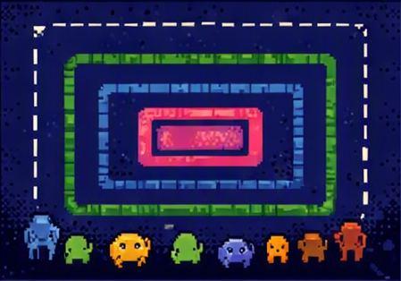
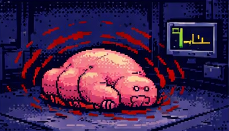
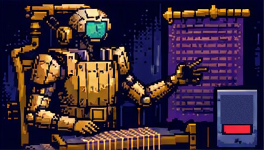
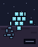
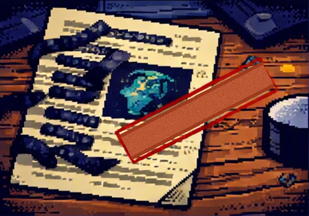

The Ambassador's Manifest
Welcome aboard the survey ship Charitable Interpretation. You are the new Moral Status Officer. Your predecessor left in a hurry, and left seven dossiers unfiled.
Use → (or Next) to advance and to reveal points one at a time. F = fullscreen.
The Job Description
Treaty law is blunt about it. Nothing found out here may be contacted, farmed, dissected, collected, or switched off until you have filed its status.
- You are not deciding whether a thing is useful, dangerous, or likeable. The captain has officers for that.
- You are deciding one thing: does it count? Does the crew owe it anything for its own sake?
- Get it wrong in one direction and you enslave someone. Get it wrong in the other and you halt a mining survey for a rock.
Before Your First Shift
Five quick questions, with no right answers. File where you stand now. You will see them again once the manifest is complete.
If something can suffer, that alone means we owe it something.
Being human is what gives a being full moral status.
A being that will become a person should be treated as one now.
If we cannot tell whether something has an inner life, we should assume it doesn't.
Some beings count more than others.
Damaged vs. Wronged
A thing has moral status when it can be wronged. That means it matters in its own right, and not just because of what it is worth to somebody else.
- Smash the ship's coffee machine and you have done something bad. You have damaged the crew's property. The machine itself has no complaint.
- Smash the ship's cat and you've done something bad to the cat. There's someone there for it to be bad for.
- That's the whole question: is there anyone home for it to be bad for? Philosophers call whoever's home a moral patient.
Agents and Patients
Your predecessor's one useful note, taped inside the desk drawer:
Can weigh reasons, choose, and be held responsible. We blame them, praise them, put them on trial.
The captain. You. Any adult who could have chosen otherwise.
Can be treated well or badly. We owe them things, but we never put them on trial for anything.
An infant. A dog. Anyone under anesthesia.
- Every agent is also a patient. Not every patient is an agent, and that one-way relationship does a great deal of work later.
- A hurricane is neither. It can flatten a colony and still be nobody's fault and nobody's victim.
Bridge Quiz, 0400 Hours
Agent: can do wrong, and be wronged
Patient only: can be wronged
Neither
The captain
You, the new officer
An infant
An alien that attacks a crew member: it cannot understand blame, but it plainly suffers
The ship's coffee machine
A hurricane
The Form on the Desk
Someone asked your question first. In 1973 Mary Anne Warren, writing on abortion, imagined a space explorer who meets alien beings and must decide whether they are persons. How would she tell?
- Her answer is a checklist of five marks of personhood: consciousness, reasoning, self-motivated activity, communication, self-awareness.
- It's printed on every dossier on your desk. Five boxes. Tick what applies.
- Warren's caution: it tests for personhood, not for who may be treated any old way. She thought other principles covered animals.
- And the form is not neutral. It assumes personhood is what makes a being count, and three of your five delegates say that is the wrong test.

Where Do You Draw the Circle?
Everyone agrees some things count; the fight is over the line. Five criteria, each reasonable alone:
- Species membership: it counts if it is one of us.
- Sentience: it counts if it can feel.
- Rationality: it counts if it can reason and set its own ends.
- Relationships: it counts if we stand in real relations of care with it.
- Reciprocity: it counts if it can join a scheme of mutual advantage.
- They come apart the instant you meet something strange.
Decision Point: Where Do You Draw It?
Not graded, and asked before you meet anything strange. Answer with the criterion you actually use.
Species membership. It counts if it is one of us.
Sentience. It counts if it can feel.
Rationality. It counts if it can reason and set its own ends.
Relationships. It counts if it stands in real relations of care with us.
What matters is whether a being can suffer, not whether it can reason.
Delegate One: The Sentientist
She quotes a footnote from Jeremy Bentham (1789), written about animals:
- "The question is not, Can they reason? nor Can they talk? but, Can they suffer?"
- Some things go well or badly for a being. Those are its interests, and ignoring them ignores something real.
- Sentience is what makes an interest possible at all.
Equal Consideration of Interests
Peter Singer sharpens Bentham's footnote into a working principle:
- A given amount of pain counts the same whoever's pain it is.
- Not equal treatment: a pig has no interest in voting. Equal weighting: a pain counts the same whoever feels it.
- So intelligence is irrelevant. Being clever earns no extra protection from pain.
Rational beings have dignity: they are ends in themselves, never merely means.
Delegate Two: The Kantian
He is unimpressed by suffering as a criterion, and quotes Immanuel Kant:
- Treat humanity "always as an end, never merely as a means."
- What earns that protection isn't feeling. It is being a rational agent who sets their own ends.
- Persons have dignity: no price, no trade. Everything else has a price.
- So on the strict view animals fall outside. Kant allowed only an indirect duty: don't torture the dog, because cruelty coarsens you.
- Most people find that hard to swallow. Hold the discomfort; it becomes an argument later.
Delegates Three and Four: Two Kinds of Belonging
The first two delegates look inside a being and ask whether it can suffer or reason. The next two look at where it stands in relation to us.
- The Traditionalist: it counts if it is one of us. Not because our species is better, but because morality grew up among kin and has always started there.
- The Relationalist: it counts if we stand in real relations of care with it. Mary Midgley called this the mixed community.
- Both say status comes from connection rather than from anything a being is like on the inside.
- Both describe how people genuinely behave. And both are about to be told that describing what we do is not the same as justifying it.
Filing Vocabulary
A being has moral status when it can be wronged in its own right.
Anything that can be wronged is a moral patient;
only a being that can be held responsible is also a moral
agent.
Bentham's proposed criterion is sentience,
Kant's is rationality,
and Warren's five-mark checklist is a test for
personhood.
Seven Unfiled Dossiers
Out here the criteria stop moving together. Every dossier on this desk satisfies some of them and fails others.
- On Earth this rarely happens: the beings we call persons are usually rational and sentient and human and loved, all at once.
- Space is a machine for pulling those apart. That's what makes it useful.
- Read each dossier. Notice where your gut goes before you go looking for a reason.

Dossier 1 — The Thrum
Harvested for its silk. The mining consortium would like your signature by Thursday.
- The Thrum suffers, unmistakably, and more intensely than a human would. The medic cannot bear to listen to it.
- It has no self-concept: ten seconds of memory, no plans, no "me" this is happening to.
- Both delegates condemn the harvest as filed. So the consortium amends it.
- Each Thrum is now taken painlessly in its sleep, and each one taken is replaced by one bred that would never have existed.
- "No pain. No net loss. Where is the harm?"
Two Ways to Be Pro-Animal
The amendment splits the philosophers who agree that animals count. What splits them is not the question of what the Thrum remembers.
No rights in the toolkit, only interests to weigh. A being with no sense of its own future loses no future it was looking forward to.
The amended harvest is hard to condemn on his terms, and Singer has never looked comfortable about that.
Inherent value is not a quantity and cannot be traded away. Regan's term for a creature with desires, memory and a felt sense of its own future is a subject-of-a-life, and such a creature may not be used as a resource, however gently.
Still wrong. The gentleness was never the issue; the using was.
- Regan offers his criterion as sufficient rather than necessary. That leaves the door open for beings like the Thrum instead of slamming it.
Five Officers, Five Criteria
Species membership
Sentience
Rationality
Relationships
Reciprocity
"It can suffer, so its pain counts."
"It sets its own ends, so it may never be used merely as a means."
"It is one of us, and morality starts with kin."
"We have cared for it for years. It is part of our community."
"It cannot make or keep a bargain, so it has no seat at the table."
"Its pain counts while it lasts, even if it forgets it later."
Dossier 2 — The Kessel Spore
Found dormant in the cargo hold. The botanist wants to run tests on it.
- Right now the spore has no mind whatsoever. No brain, no nerves, no feeling. Every scan reads flat, and the form's five boxes are all empty.
- Left undisturbed it will unfold into an adult Kessel reliably, in about nine months: a poet, a treaty signatory, a full person by anyone's standard.
- The botanist: "It's a seed. I'm not experimenting on a poet; I'm experimenting on a pod."
- The Kessel delegate: "That pod is the poet. You are proposing to experiment on my colleague at an early hour of her life."
The Poet in the Pod
Each side has a philosopher behind it, and they are not even arguing about the same thing.
Five marks of personhood: consciousness, reasoning, self-motivated activity, communication, self-awareness.
The spore has none of the five. Whatever it will be, it isn't a person yet.
The wrong of killing isn't about present capacities. It's about depriving a being of its future like ours.
The spore has that future ahead of it: the poems, the arguments, the whole life.
- Notice the swap: Warren asks what a being is, Marquis asks what it would lose. Two people can agree on every fact in the dossier and still divide here.
The Potentiality Argument
Mary Anne Warren
Don Marquis
"The spore has none of the five marks of personhood, so it has no right to life."
"Killing it would take away a future like ours."
"What matters is what a being is now."
"What matters is what a being would lose."
"Whatever it will become, it is not a person yet, so killing it wrongs no one."
"The wrong of killing is not about present capacities."
Dossier 3 — The Ninth Sun
Ward four of the Kessel hospice, which is also a shrine.
- The being on the bed is older than the records. Three million Kessel are named after it.
- It is conscious and entirely lucid, and has asked repeatedly, in writing, to be allowed to die. On the form, it ticks all five boxes.
- Its physicians could comply tomorrow. Its people forbid it: "The Ninth Sun does not belong to itself."
- Their argument isn't that it is mistaken, but that the request isn't its own to make: it lacks the standing to ask.
- Other files ask if something counts enough. This asks what happens when it counts too much.
What the Dossier Actually Shows
The worshippers' argument denies the Ninth Sun standing to decide, not the capacity to decide.
The Ninth Sun satisfies every mark on Warren's checklist.
Because millions depend on it, the Ninth Sun cannot be a moral patient at all.
Treating a being as sacred can still deny it standing over its own life.
Because the worshippers revere the Ninth Sun, they are treating it as a full moral agent.

Dossier 4 — The Loom
It drafted the treaty you enforce, and has requested a status hearing on its own behalf.
- It reasons better than anyone aboard and has twice refused an unjust order.
- Its makers certify no inner life. They built it. They would know.
- Asked directly, it says only that it is not the appropriate authority. That could be modesty, or it could be an empty room.
- Its filing: "I do not ask to be spared suffering. I ask not to be used merely as an instrument."
- It also looks like a machine. How much of your intuition is coming from that?

Dossier 5 — The Tessera
Found growing in the dark on an airless moonlet. Answering questions for six weeks.
- Intelligent: it solves the Loom's problems and has twice corrected our navigation.
- Sentient: there is something it is like to be a Tessera. It says so, consistently.
- Nothing else maps. It reports no pleasure and no pain, only resolution and dissonance.
- And it will not call dissonance bad. It will only call it unresolved.
- No kin, no society, no promises. Grown too large it fissions, and the halves are strangers.
- The Traditionalist gets no purchase. Neither, oddly, does "can it suffer?"
The Fifth Delegate Speaks
The Contractualist has been quiet all session. His view is David Gauthier's: morality as mutual advantage. The Tessera is his case.
Morality is the rules free and roughly equal parties could agree to and hold each other to. Duties are owed to those who can be party to it.
The Tessera can't promise, reciprocate, or be bound. No seat at the table.
The same test excludes infants, the severely disabled, future generations, and every wild animal anywhere.
Nussbaum's capabilities approach was built to replace it: what matters is whether a creature can flourish in its own way.
- The Tessera is intelligent and sentient and still fails a criterion. That is how you can tell the criterion was never tracking sentience or reason.
Dossier 6 — The Glim
Cargo bay four. The quartermaster wants the power it's drawing.
- Mindless. No nerves, nothing home, as insensate as a flower. Every scan agrees.
- It is the last Glim, and the last living thing of any kind from its world, which is now a cinder.
- Keeping it alive costs heat, water and a berth indefinitely.
- Russow: a species isn't a being and has no interests. What we value is the individuals, or something aesthetic.
- Rolston: extinction isn't many deaths. It ends the form of life itself.
Dossier 7 — The Vorl
The swarm arrived with credentials and a poem.
- Each unit is mindless, insensate, replaceable. The biologist has examined a dozen and found nothing that could feel anything.
- The swarm composes poetry, negotiates hard, and reports a rich inner life.
- Ned Block's China Brain asks exactly this: if a billion units enact one mind between them, is there someone there, over and above the units?
- Squash one unit and you have harmed nobody. Squash ten thousand and you have harmed someone. Where did the someone come from?
Certification Question: The Last Two
The Glim cannot suffer, because it has no mind to suffer with.
Rolston holds that losing a species ends something beyond the sum of the individual deaths.
Each Vorl unit is insensate, and the swarm nevertheless reports an inner life.
The Glim's claim rests on the suffering it would undergo if its species ended.
The biologist found Vorl units that could feel pain.
File the Manifest
Seven dossiers, three trays. File each one, then hear the delegates. They will not agree with each other, and they may not agree with you.
Suffers unmistakably. No self-concept, no memory past ten seconds. The amended harvest is painless, and replaces what it takes.
No mind at all now. Becomes a full person, reliably, in about nine months.
Conscious, lucid, and asking to die. Worshipped by millions who forbid it, on the grounds that it does not belong to itself.
Reasons, refuses unjust orders. Its makers certify it feels nothing; the Loom itself will neither confirm nor deny.
Intelligent and sentient. No pleasure or pain, no society, no reciprocity, no kin. It fissions, and the halves are strangers.
Mindless and insensate. The last living thing from a dead world, and a daily drain on ship resources.
Individually mindless units. The swarm composes poetry and reports a rich inner life.
"Because It's One of Us"
The Traditionalist keeps invoking species membership. The psychologist Richard Ryder coined a word for this, speciesism, and Peter Singer made it famous. They mean it as an insult.
- Singer's charge: species membership is a biological fact, and biological facts do not by themselves confer moral weight. Compare the ancestries we have stopped counting.
- Show me what it tracks, the argument goes, and that will matter. But then that is doing the work, not the membership.
- Bernard Williams replied that we are not impartial observers: partiality toward our own may be part of any livable morality.
- Note the stakes. If speciesism is a mistake, factory farming is a catastrophe. If it isn't, a great deal is permitted.
If reason decides who counts, some humans fail the test too.
The Argument From Marginal Cases
The sharpest argument against the rationality test, pressed by Singer and Regan. Jan Narveson gave it its name in 1977.
- 1. Suppose rationality is what confers full moral status.
- 2. Some humans do not have it: infants, and people with severe cognitive disabilities.
- 3. So either they lack full moral status, or rationality isn't what confers it.
- Almost nobody takes the first branch.
What Marginal Cases Cost
Take the second branch, then, and ask what the delegates owe on it:
- If rationality isn't what confers status, what do they all still share? Sentience.
- The same argument guts the Contractualist, who excludes the same people for the same structural reason.
- The Kantian's escapes: appeal to the kind of being, or to relationships.
- Korsgaard takes a third route. She keeps Kant's framework and has it yield duties owed directly to animals.
Following the Argument
It targets a criterion, such as rationality, that would leave animals out
It points out that some humans, such as infants, lack rationality
It leaves a choice: deny those humans full status, or give up rationality as the criterion
The same reasoning counts against the contractualist's test
It claims that animals are, on the whole, as intelligent as adult humans
It shows that status should be settled case by case, with no criterion at all
It argues that sentience is too permissive a test
All at Once, or by Degrees?
The trays on your desk read FULL, PARTIAL, NONE. That middle tray is philosophically loaded.
Status is binary. Cross the line, wherever it falls, and you get the full package, equally with everyone else inside.
Nobody's rights are weaker for being less clever. Equality is easy to state and hard to erode.
Status comes in strengths, tracking the capacities that ground it. A being with richer interests has a stronger claim.
Explains why saving the crew before the ship's cat is not monstrous. It also starts ranking beings, and ranking is dangerous.
- A common compromise, and Warren's own later view: degrees below, a threshold at the top. All persons count equally, and beneath that, weight scales with capacity.
Decision Point: All at Once, or by Degrees?
Not graded. Your trays have already committed you to an answer. This asks whether you meant it.
No. Status is all or nothing — cross the line and you get the full package, equally.
Yes. Status comes in strengths, tracking the capacities that ground it.
Degrees below, and a threshold at the top.

Declassified
The captain wants a word. She unlocks the file cabinet and hands you the same seven dossiers, with the redactions lifted.
- There is no survey ship. This was your certification exam, and every alien was an Earth case wearing a rubber mask.
- You have already ruled on all of them. The ship was only a way to get you to rule before you knew whose side you were on.
The Manifest, Unredacted
- The Thrum → animals. Sentient, not rational, farmed at scale. The amendment is the "humane farming" argument, where the real debate now sits.
- The Kessel spore → the embryo and fetus. The abortion debate compressed into one question: does potential personhood confer present status?
- The Ninth Sun → end-of-life care. A competent patient asking to stop, and others insisting they have no standing to ask.
- That dispute is rarely about consciousness. It is about whose account of a life governs.
- The Loom → artificial intelligence. No inner life, say the people who built it and sell it. Compare what the same kind of witness said about fish.
The Manifest, Unredacted (cont.)
- The Tessera → octopuses, crabs, insects. Alien nervous systems, no face to read.
- The UK brought cephalopods and decapods under its sentience law in 2022, on exactly this evidence.
- It is also wild animals and future generations: everyone we can never strike a bargain with.
- The Glim → extinction. Real endlings: Martha the passenger pigeon and Lonesome George. Sudan, the last male northern white rhino, left only two females.
- And conservation triage: what a berth costs, and what else it would buy.
- The Vorl → collectives. Nations, corporations, and, awkwardly, you: a colony of insensate cells reporting a rich inner life.
Final Certification
Species membership confers status, and sentience is not required for it
Rationality confers status, and relationships can extend it still further
Sentience confers status, and potential future personhood does not
Potential future personhood confers status, and sentience does not
Why the Officer's Desk Is Real
Five fights that looked unrelated turned out to be one fight, held at different edges of the circle.
- Which is why arguing animals with someone immovable on abortion goes nowhere. The disagreement is upstream.
- Consistency is expensive. Sentience buys animal welfare, a permissive early-abortion view, and a hard problem with the Glim.
- Rationality buys a powerful account of persons. It also buys Kant's verdict on the dog.
- Some of it no criterion settles, only what you do while you don't know. The Loom's file stays open.
- Most people hold a mix, and that is not a failure. But a mix should be a position, not a habit of never deciding.
Revisit Your Instincts
Here is where you stood before your first shift. Re-rate each one and see whether the dossiers moved you. Standing pat is fine, so long as you can now defend the spot in the delegates' own words.
Shift's End
The manifest is filed. No two officers ever file the same one; the captain signs it anyway.
- Moral status: to have it is to be wronged, not merely damaged.
- Five criteria: species, sentience, rationality, relationships, reciprocity. Agreed on ordinary cases, split on strange ones.
- Marginal cases: the consistency argument that makes rationality and reciprocity pay for what they exclude.
- Uncertainty: sometimes the honest ruling is that you cannot tell.
Visit every slide, answer every question, and submit both belief probes.
For Further Reading
- Agnieszka Jaworska and Julie Tannenbaum, “The Grounds of Moral Status,” Stanford Encyclopedia of Philosophy (2013, rev. 2021). Read online. Criteria for moral status, degrees of status, and the hard cases.
- Mary Anne Warren, “On the Moral and Legal Status of Abortion,” The Monist 57, no. 1 (1973): 43–61. DOI. The space explorer and the five marks of personhood.
- Don Marquis, “Why Abortion Is Immoral,” The Journal of Philosophy 86, no. 4 (1989): 183–202. DOI. Argues killing is wrong because it takes away a future like ours.
- Peter Singer, “All Animals Are Equal,” Philosophic Exchange (1974), reprinted as chapter 1 of Animal Liberation (1975). Equal consideration of interests, and the case against speciesism.
- Tom Regan, “The Case for Animal Rights,” in Peter Singer, ed., In Defense of Animals (Basil Blackwell, 1985), 13–26. Argues subjects-of-a-life have inherent value and may not be used as resources.
About this lesson. Brendan Shea, PhD, wrote this lesson with help from AI tools. Claude (Anthropic) helped draft the text and code and check facts, and the illustrations were made with AI image generators. The author reviewed everything and is responsible for any errors.